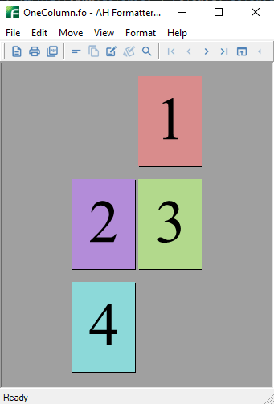
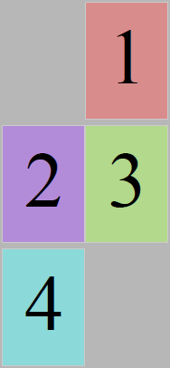

Page layout when PDF is opened
To specify how the pages are shown when a document is initially opened in a PDF viewer, use <meta> with ‘name’ set to ‘pagelayout’. One of these values may be specified: ‘SinglePage’, ‘OneColumn’, ‘TwoColumnLeft’, ‘TwoColumnRight’, ‘TwoPageLeft’, or ‘TwoPageRight’. ‘TwoPageLeft’ and ‘TwoPageRight’ may only be specified for PDF1.5 or later. When nothing is specified, it depends on the operation of the PDF viewer application. In this sample, ‘TwoPageLeft’ is specified in ‘pagelayout’.

This example uses the four-page document shown opened in the Antenna House Formatter GUI in the screenshot on the right.
All of the screenshots for this example show pages at 10% zoom to illustrate when the ‘pagelayout’ value does and does not allow multiple pages to be shown on initial viewing. To save space, screenshots from the PDF viewer show just the pages rather than the full PDF viewer window.
<meta name="pagelayout" Content="SinglePage">
Displays one page at a time. When the document is scrolled, the PDF viewer shows just page 2, then page 3, and so on.
<meta name="pagelayout" Content="TwoPageLeft">
Displays the pages two at a time, with the odd-numbered pages on the left. When the document is scrolled, the PDF viewer shows pages 3 and 4, then pages 5 and 6, and so on.
‘TwoPageLeft’ may only be specified for PDF 1.5 or later.
<meta name="pagelayout" Content="TwoPageRight">
Displays the pages two at a time, with the odd-numbered pages on the right. The initial view shows just page 1.
When the document is scrolled, the PDF viewer shows pages 2 and 3, then pages 4 and 5, and so on.
‘TwoPageRight’ may only be specified for PDF 1.5 or later.
<meta name="pagelayout" Content="OneColumn">
Displays the pages in one column. When the document is scrolled, the PDF viewer may show partial pages at the top or bottom of the window.
<meta name="pagelayout" Content="TwoColumnLeft">
Displays the pages in two columns, with the odd-numbered pages on the left. When the document is scrolled, the PDF viewer may show partial pages at the top or bottom of the window.

<meta name="pagelayout" Content="TwoColumnRight">
Displays the pages in two columns, with the odd-numbered pages on the right. When the document is scrolled, the PDF viewer may show partial pages at the top or bottom of the window.